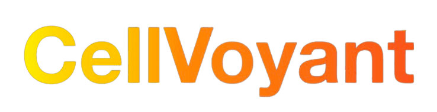

CellVoyant – See the future of cells
CellVoyant is a biotechnology company that predicts cell state using live cell microscopy and artificial intelligence. We use this approach to optimise and unlock human cell manufacturing for research and therapeutics applications. We aim to understand and solve important health issues, make a long-lasting positive impact on society and change the world.
At the heart of CellVoyant is FateView™, our AI-powered SaaS platform. FateView™ enables biologists to visualize, track, and forecast cell state and differentiation trajectories in real-time. It supports high-throughput experimentation and model inference, combining microscopy, computer vision, cloud infrastructure, and AI to serve cutting-edge stem cell research and manufacturing. [link]

|